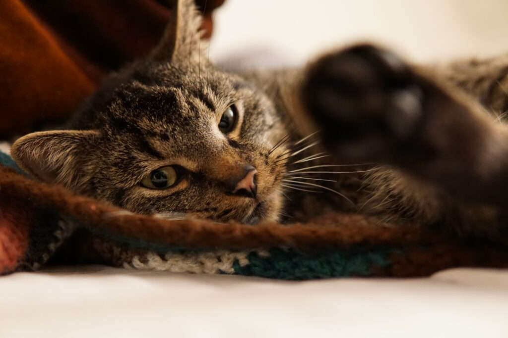
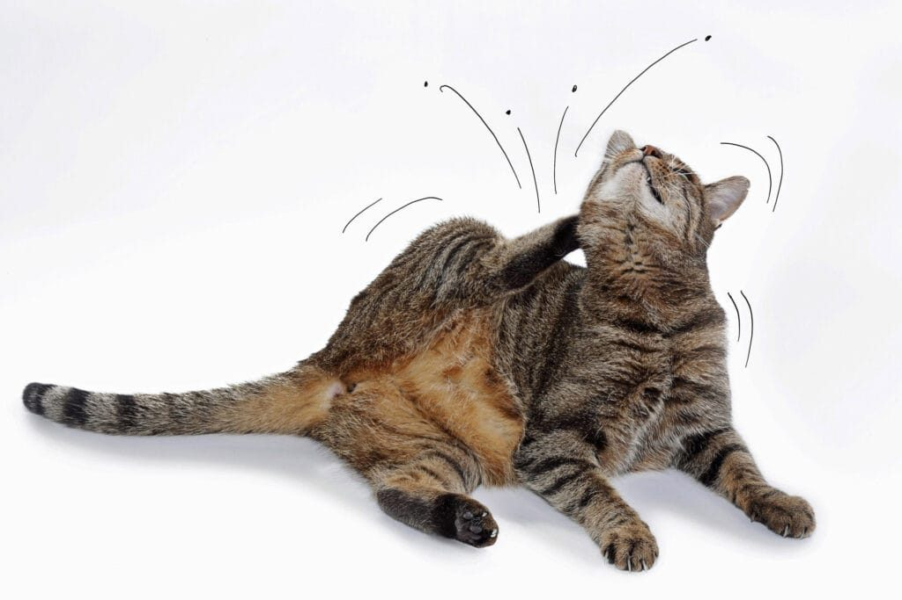

Kastration
Hund, Katze, Kaninchen, Meerschweinchen und Nager – chirurgisch oder chemisch, bei der Hündin auch endoskopisch als LOVE.
Alles zur Kastration →Tierarztpraxis im Westen von Wien
Röntgen, Blutlabor, Ultraschall und Endoskopie unter einem Dach – und ein Team, das sich für jedes Tier Zeit nimmt. Schwerpunkte: endoskopische Kastration, Haut- und Ohrenambulanz, Orthopädie.
 Hauptstraße 114/1, 1140 WienHund, Katze, Kaninchen, Meerschweinchen, Nager, Frettchen
Hauptstraße 114/1, 1140 WienHund, Katze, Kaninchen, Meerschweinchen, Nager, Frettchen
Behandlungsschwerpunkte
Eine kleine, sehr engagierte Praxis mit der Ausstattung einer Klinik – von der Vorsorge bis zum planbaren Eingriff.
Hund, Katze, Kaninchen, Meerschweinchen und Nager – chirurgisch oder chemisch, bei der Hündin auch endoskopisch als LOVE.
Alles zur Kastration →Röntgen, Blutlabor, Ultraschall und Endoskopie – Befunde entstehen im Haus, ohne Wartezeit auf Fremdlabore.
Zur Diagnostik →Juckreiz, Haarausfall, Ohrenentzündungen: geführt von einem Fachtierarzt für Dermatologie.
Zur Hautambulanz →Betreuung von Hunden und Katzen mit kurzer Schnauze – mit besonderem Augenmerk auf Atmung und Narkose.
Mehr erfahren →Diagnose und Behandlung des Kreuzbandrisses bei Hund und Katze – ein häufiges Altersthema, besonders nach früher Kastration.
Mehr erfahren →Euthanasie in ruhiger Atmosphäre, mit Zeit für Sie und Ihr Tier.
Mehr erfahren →Thema Kastration
Ihr Haustier erreicht die Geschlechtsreife und Sie denken seit einigen Wochen über eine mögliche Kastration nach. Ihre Hündin ist gerade läufig und das Gassigehen ist ein Spießrutenlauf; Ihr Rüde reitet auf; Ihr Kater riecht penetrant; Ihre Katze ist rollig und miaut Ihnen die halbe Nacht ins Ohr; Ihre Kaninchen haben scheinbar nichts anderes mehr im Kopf.
Die Fragen zum Thema Kastration sind komplex, die Antworten vielfältig. Wir haben die wichtigsten davon zusammengestellt – mit Pro und Contra, Altersempfehlungen und dem genauen Ablauf am Operationstag.
Ihr Haustier in guten Händen
„Modernste Versorgung mit Feingefühl“ – geleitet von Dr. Maurizio Colcuc, Fachtierarzt für Dermatologie und Vorsitzender der Prüfungskommission für Fachtierärzte Dermatologie.
Aus unserem Ratgeber

2. November 2021Jeder kennt es: Der Besuch beim Tierarzt steht bevor und schon am Abend davor beginnt das Grübeln, wie der getigerte Freund in die Box kommt.
Weiterlesen →Viele Katzen erkranken an feliner infektiöser Peritonitis. Der Erreger ist das feline Coronavirus; es bedarf einer Mutation, um klinische Symptome auszulösen.
Weiterlesen →
5. August 2021Sie kaufen ein Flohmittel, geben es Ihrem Hund oder Ihrer Katze – und zehn Tage später springen immer noch Flöhe herum. Sind die Flöhe resistent geworden?
Weiterlesen →74 Bewertungen · Gesamturteil „GUT“
„Sehr sehr freundlich, kompetent, gute Beratung. Nimmt sich sehr viel Zeit. Fühlen uns mit unserem Hund sehr gut betreut und aufgehoben! Kann ich nur weiterempfehlen!!! Danke“
Sandra Metzker30. Oktober 2020„Dr. Colcuc und sein Team sind sehr einfühlsam und nehmen sich wirklich Zeit. Sowohl unsere Katzen als auch wir fühlen uns immer sehr gut aufgehoben und beraten. Auch bei Notfällen wurde unserem Kater jederzeit geholfen.“
Weilah de las Montañas13. August 2020„War gestern mit meiner Hündin in der Tierklinik West und war rundum zufrieden! Ich bin eigentlich sehr pingelig, was die Tierarzt-Wahl betrifft, hier wusste ich vom ersten Moment an, dass meine Hündin in den besten Händen ist. Ein großes Lob an das komplette Team!!“
Rebecca Bainschab10. August 2020„Empfehlenswert, 5 Sterne.“
Doan Mamudoski29. Oktober 2020Online buchen über petleo, telefonisch unter +43 1 577 43 00 oder mit dem Anfrageformular – inklusive Kostenanfrage für geplante Eingriffe.